BESTIARY · 角色图鉴
七只角色
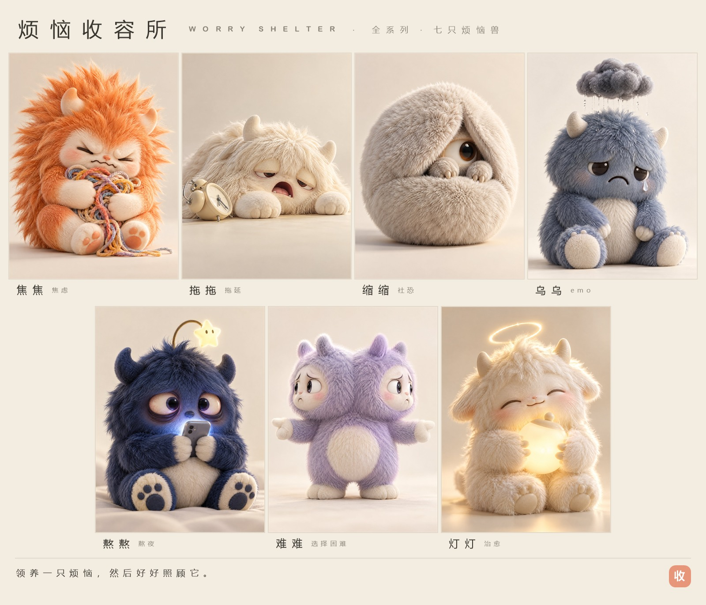

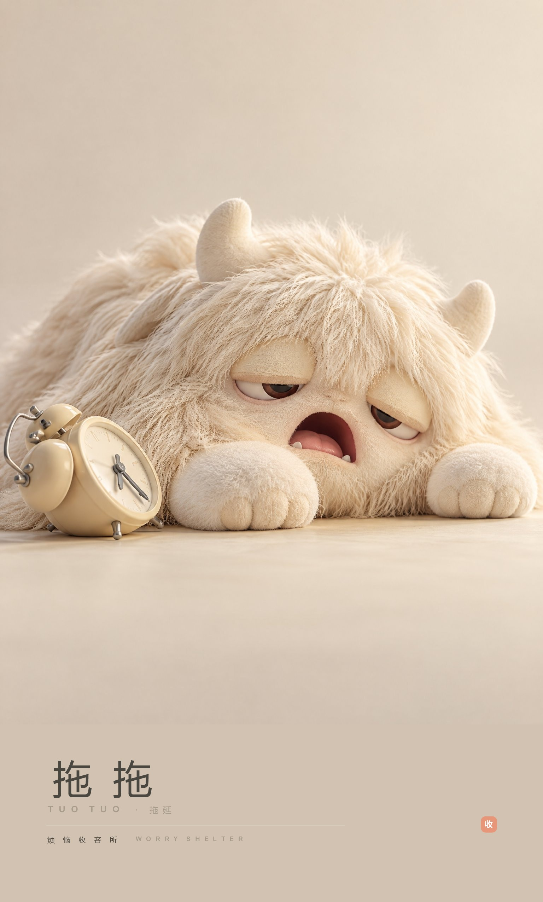
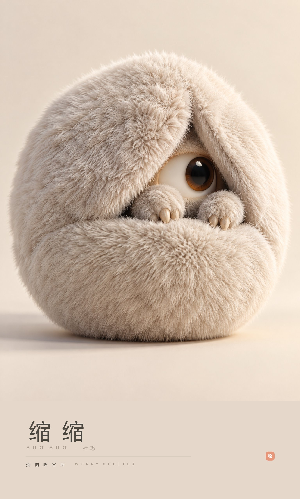
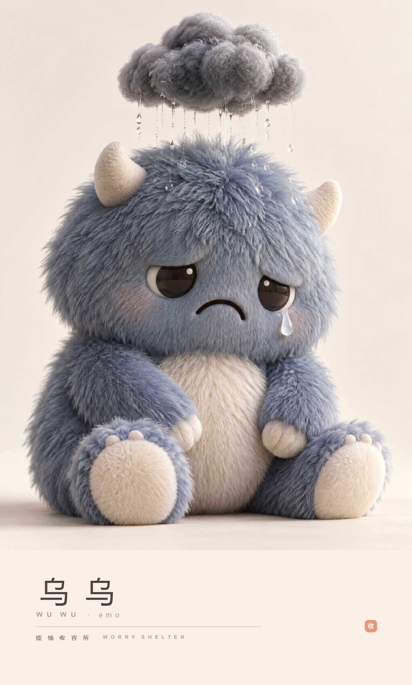
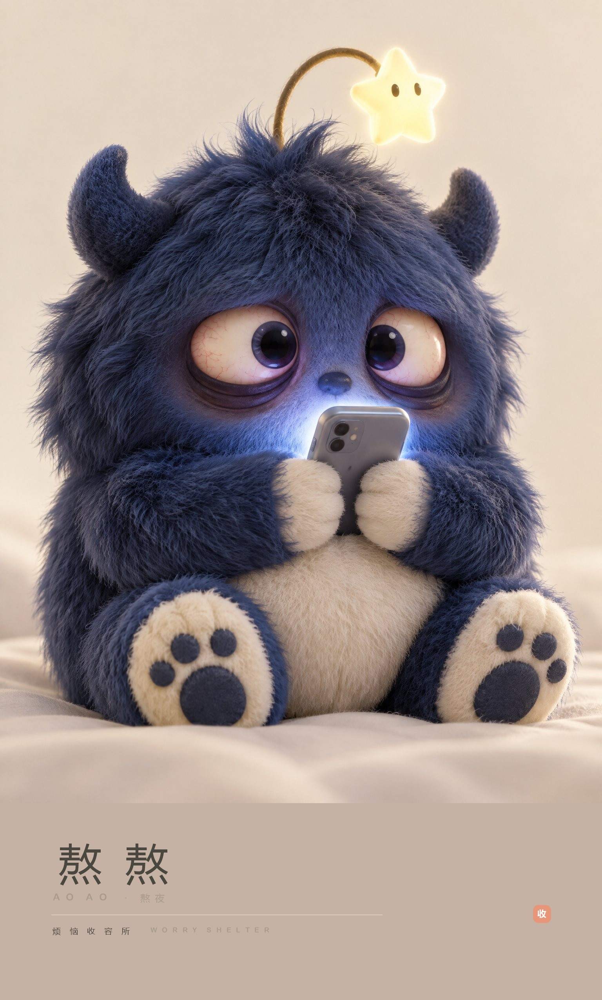
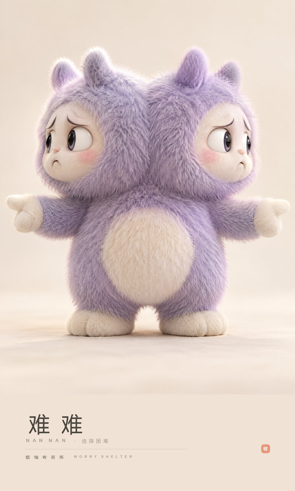
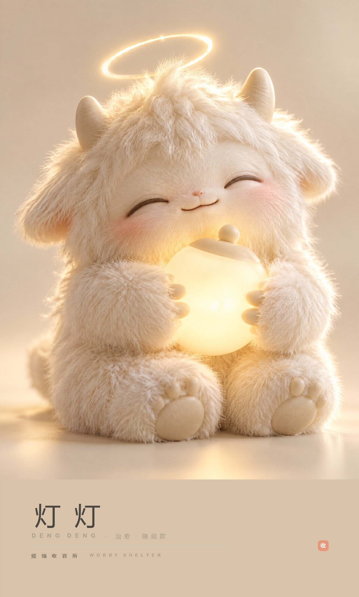
每个烦恼，都是一只等你收养的小怪兽
市面上的治愈系 IP，绝大多数都在做「可爱动物」——可爱，但和"我"没关系。
「烦恼收容所」反过来：把负面情绪本身做成角色。焦虑、拖延、社恐、emo、熬夜、选择困难——这些不是缺点，是每个人每天都在经历的东西。
它不需要你"振作起来"，它只需要你收养它，然后好好照顾它。
「烦恼收容所」是一个不为人知的地方。
当人们把烦恼丢掉时，那些烦恼不会消失——它们会变成小怪兽，跑到收容所里。
这里没有评判，没有"你应该振作起来"，只有照顾。
每一只烦恼兽，都在等一个愿意收养它的人。







每盒附一张领养证——编号 + 角色档案 + 一句安慰。6 常规款 + 1 隐藏款，把「买东西」变成「领养」。
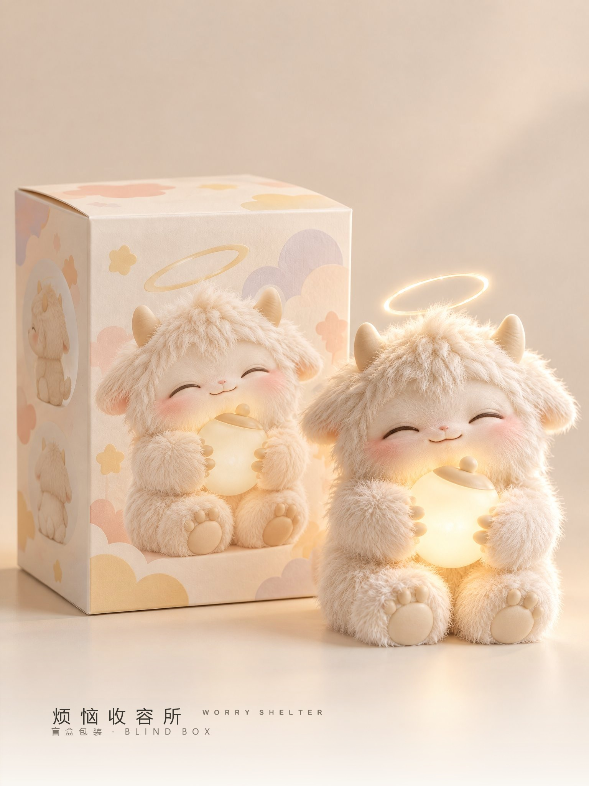
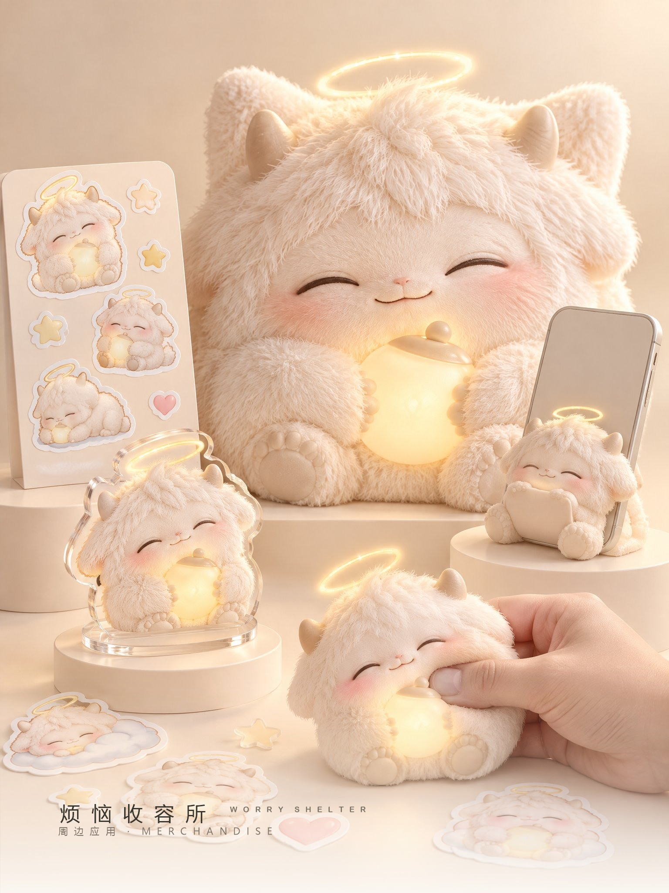
它不只是一只摆在柜子里的公仔，它在你桌上、窗边、深夜的灯光里——安静地陪着你。
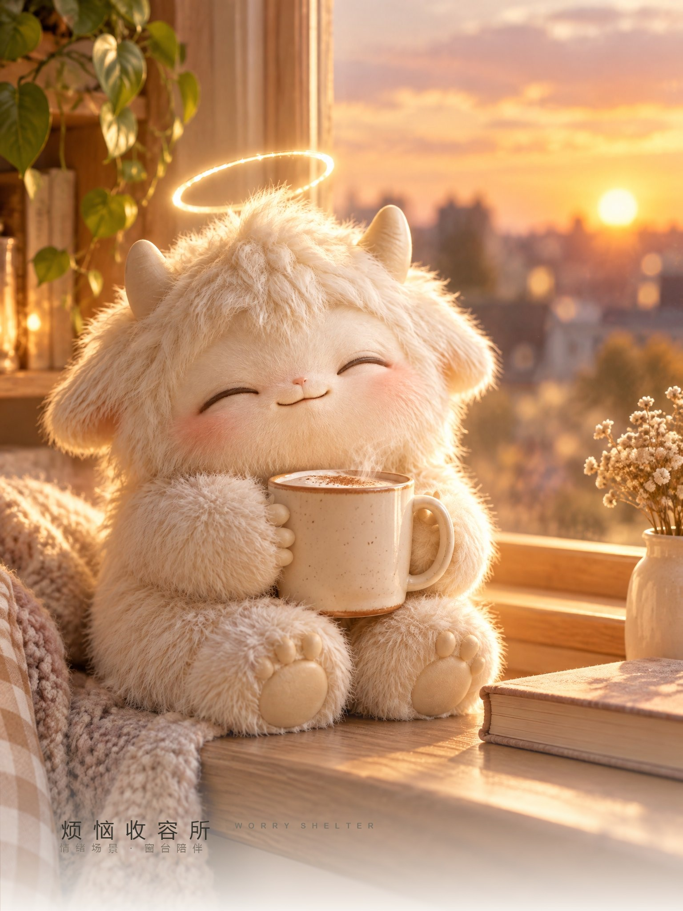
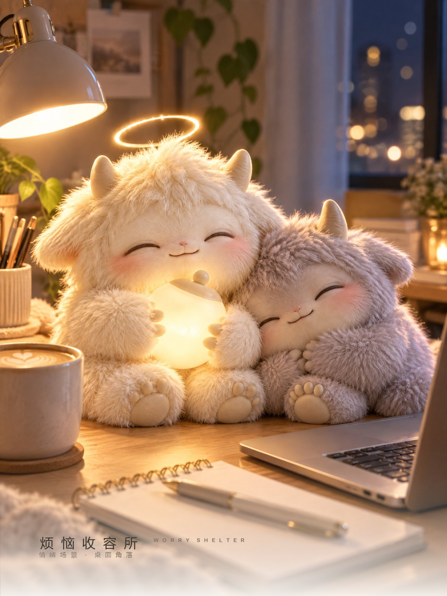